G1: Camfield Place,
Wildhill Road/B158, Wildhill
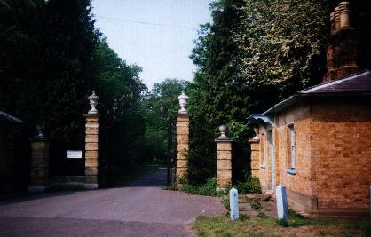
GIDEON’S
WAY: The Lady-Killer
(Leslie Norman: September 1964)
After their marriage Robert Carne (Ray Barrett)
takes Marion Grove
(Rosemary Leach) back to her country mansion where
they relax by the
pool and discuss their future.
THE
BARON: The Seven Eyes
of Night (Robert Asher: April 1966)
Mannering's Jensen enters the gate of the Villa de Fleur, pulls up
outside the house and he enters.
THE
BARON: The Man Outside
(Roy Baker: September 1966)
Whilst touring in his Jensen, searching for the killer of his friend,
Mannering spots Cordelia by the gates of a large house and he stops to
compare notes.
THE
CHAMPIONS: The Iron Man
(John Moxey: June 1967)
A car full of revellers arrive at the gates of El Caudillo's villa
looking for the Villa Humoresque. As the guard gives them directions
they attack him and make their way to the villa.
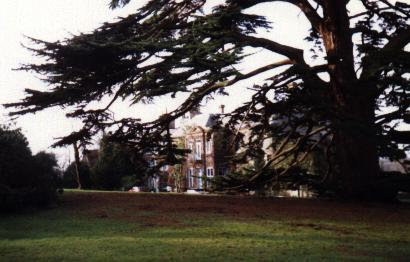
THE
AVENGERS: Split!
(Roy Baker: January 1968)
Steed (Patrick Macnee) visits Lord Barnes' house in
his Bentley. Lord
Barnes enters the house followed by Peter Rooke and Tara King.
THE
AVENGERS: Requiem
(Don Chaffey: January 1969)
Tara (Linda Thorson) arrives at the gates of
Steed's hide out in her
Lotus and after checking, enters.
THE
AVENGERS: Bizarre
(Leslie Norman: February 1969)
Steed arrives at the gates of The Happy Meadows in his yellow Rolls
Royce.
G2: West Lodge, Cockfosters Road, Hadley Wood
HAMMER HOUSE OF MYSTERY AND
SUSPENSE: The Late
Nancy Irving (Peter
Sasdy: Spring 1984)
Nancy Irving (Christina Raines) arrives at her
hotel and is observed by
a waiting motorist who follows her when she leaves next morning.
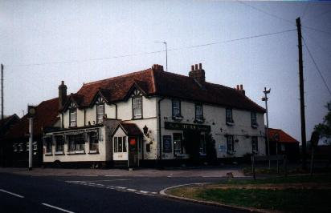
THE
AVENGERS: They Keep
Killing Steed (Robert Fuest: August 1968)
Arcos (Ray McAnally) and Zerson (Norman
Jones) watch a car arrive at Ye
Olde Sun Hotel (The Sun), and Tara watches them by
the church from her
window. When Steed leaves the hotel, he is kidnapped in their fake taxi
cab.
Film:
THE COBBLERS OF UMBRIDGE
(1972)
G4: Brookmans Park Transmitting Station, Brookman's Park
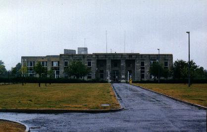
THE
AVENGERS: Super Secret
Cypher Snatch (John Hough: June 1968)
MI12 agent, Roger Jarret (Clifford Earl) is shot by
a group of men from
Classy Glass Window Cleaners at the headquarters of the Cypher Division
as Cypher personnel watch on. Betty (Anne Rutter),
a secretary from
Cypher Division arrives and shows her pass to the guard, Masters (Alec
Ross). Steed later arrives in his yellow Rolls Royce to check
on
security. Ferret (Ivor Dean) visits Cypher HQ and
finds it deserted.
The next day the Classy Glass Cleaners arrive led by Maskin.
G5: Woodside Lodge, Wildhill Road, Welham Green
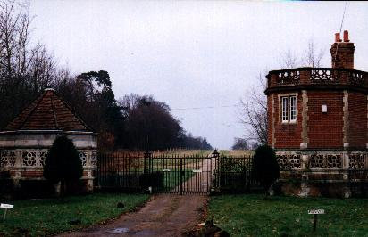
THE
AVENGERS: Invasion of
the Earthmen (Don Sharp: November 1967)
After being followed by Alpha Academy students in their Land Rover
Steed (Patrick Macnee) and Tara (Linda
Thorson) in the AC 427 are
confronted at the gates to the academy by more students who eventually
allow them to enter.
G6: Longmeadow, Woodside
Lane, Welham Green
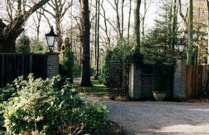
THE
AVENGERS: Look -
(Stop me if you've heard this one) But There Were
These Two Fellers ...
(James Hill: March 1968)
Tara (Linda Thorson) in her AC 427 follows Maxie
Martin (Jimmy Jewel)
and Jennings (Julian Chagrin) in their taxi to
Vauda Villa and is
captured when she tries to 'phone Steed. Posing as Gentleman Jack,
Steed visits the Villa in his yellow Rolls and is met by Merlin (Robert
James).
THE SAINT: Staring
the Saint (James Hill: 1963)
Simon gets a call from Byron Ufferlitz to meet him immediately so Simon
drives there and parks his Volvo on a side road next to the house (Wood
Ride). After finding Ufferlitz dead and Peggy Warden in the house (4
Camlet
Way) he helps her escape as the police arrive. They both make their
escape in the Volvo.
(Identified by Geoff Dodd, February 2024)
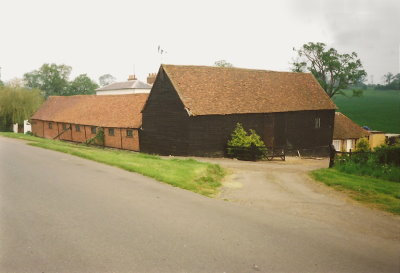
THE
PROTECTORS: Wheels
(David Tomblin: 1973)
The Contessa (Nyree Dawn Porter) arrives in her car
at the farm where
Harry (Robert Vaughn) and Paul are tuning up their
Ford Escort rally
car.
G9: Princes Park Manor (former Friern Hospital), Friern Barnet Road, Friern Barnet
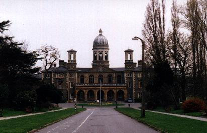
THE
SAINT: The Frightened
Innkeeper (Roy Baker: December 1964)
Simon takes Julia to see where the tunnel under the inn leads. They
find it that it finishes below the local prison.
G10: New Southgate Cemetery, Brunswick Park, Southgate
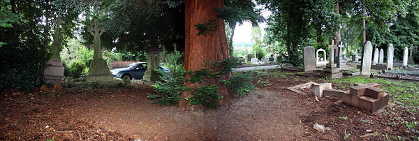
THE
AVENGERS: The
Grave-Diggers (Quentin Lawrence: March 1965)
The sexton (Victor Platt) watches as a funeral of
Dr. Marlowe comes to
an end in Pringby churchyard. After he finishes filling in the grave a
small aerial ascends unnoticed from the ground. Later Steed (Patrick
Macnee) visits the churchyard in to investigate and finds out
from the
sexton the Dr. Marlowe has just been exhumed by the undertakers. Steed
gives chase in his vintage Vauxhall.
(Identified Alan Field, June 2007)
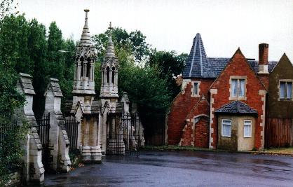
THE
BARON: Epitaph for a
Hero (John Moxey: October 1965)
John Mannering and David attend Jim Carey's funeral. Helga (Patricia
Haines), Charlie (Nosher Powell) and Owen
Davies (Artro Morris) pay
their respects also.
THE
CHAMPIONS: The Body
Snatchers (Paul Dickson: Late 1967)
Frank Nicholls (J.G.Devlin) and a local reporter
break into a secret
laboratory concealed beneath a Welsh church yard. Richard Barrett meets
up with Nicholls in the crypt of the church after dodging armed
patrols. Squires (Bernard Lee) and Yeats (Philip
Locke) lead their men
in an attack on the church.
RANDALL
AND HOPKIRK [DECEASED]: Whoever
Heard of a Ghost Dying? (Ray Austin: Late 1968)
Jeff (Mike Pratt) drives through the gates of the
cemetery where Marty
(Kenneth Cope) is about to be exorcised by Purley (Charles
Lloyd Pack)
under the instructions of Hellingworth (John Fraser)
and Carol
(Alexandra Bastedo). A fight breaks out and
Inspector Large (Ivor Dean)
turns up to arrest the criminals.
RANDALL
AND HOPKIRK [DECEASED]: Somebody
Just Walked Over My Grave (Cyril Frankel: Summer
1969)
Jeff (Mike Pratt) and Marty (Kenneth Cope)
go to investigate the
previous night's occurrences at Marty's grave and are met by Jeannie
(Annette Andr�); they go the gate house. Later Jeff
is attacked by
Harper (Geoffrey Hughes) and is picked up by
Mandrake (George Murcell).
Young Harry Mandrake (Nigel Terry) is taken by
Dighton (Bernard Kay)
and Harper from the tunnel after escaping from the house; next morning
Marty and Jeff investigate.
THE
ADVENTURER: Mr
Calloway is a Very Cautious Man (Barry Morse)
Gene Bradley (Gene Barry) and Mr Parminter (Barry
Morse) visit the
grave of George Frederick
Galloway.
(Spotted by Jaz Wiseman, January 2005)
Film:
THAT'S YOUR FUNERAL
(1973)
G11: Directorate of Technical Services and Directorate of Housing and Environmental Services, 1255 High Road, Whetstone
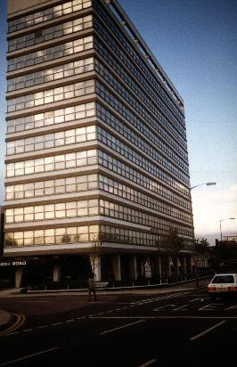
THE
SAINT: The Queen's
Ransom (Roy Baker: April 1966)
Simon Templar and Queen Adana arrive at the Schweizer National Bank,
and later depart followed by the villains.
THE
CHAMPIONS: (February 1967 - March 1968)
This building, with appropriate optical printing of background, appears
as Nemesis HQ in various establishing shots.
G12: Northway House, High Road, Whetstone
THE
BARON: The Long, Long
Day (Roy Baker: April 1966)
The Baron and Cordelia make their way to the Jensen in The Ministry of
Justice car park and are followed as they leave by a red Citroen.
G13: The Bee Hive, Church Street, nr. Epping Green
THE
SAINT: The Frightened
Innkeeper (Roy Baker: December 1964)
Simon arrives in his Volvo at 'The Weary Traveller'. That same night
Tom Kane (Percy Herbert) arrives at the inn
carrying a large case.
During the early hours of the night Simon observes Martin Jeffroll
(Michael Gwynn) and Weems (Norman Bird)
pushing an army truck from the
inn to the lane before driving off. In the morning Mr Yesterman (John
Gabriel), a friend of Jeffroll's, arrives at the inn. Simon
and Julia
leave in the Volvo to find out where the tunnel Simon has found during
the night leads. After Simon returns to the inn Kane plants a bomb in
the Volvo. When Simon and Julia leave in the Volvo to fetch the police,
Jeffroll follows in his car in an attempt to warn them about the bomb.
Jeffroll is followed by Weems and Kane who races out after him with a
gun. A few days after the adventure is over Simon arrives back at the
inn with a cheque for Julia and a new Volvo for himself.
G14: Broadgates Avenue, Hadley Wood
RANDALL
AND HOPKIRK [DECEASED]: Vendetta
for a Dead Man (Cyril Frankel: Autumn 1968)
Marty and Jeff go to check out Emil Cavello-Smith. By questioning a
neighbour they discover he is married. As Jeff and Marty discuss this
in the Vauxhall, they observe Sam Grimes (Timothy West)
leaving the
Cavello-Smith's house after visiting Mrs. Cavello-Smith (Ann
Castle).
They follow him as he drives away.
Spotted by John Holburn
G15: Well Road, Northaw

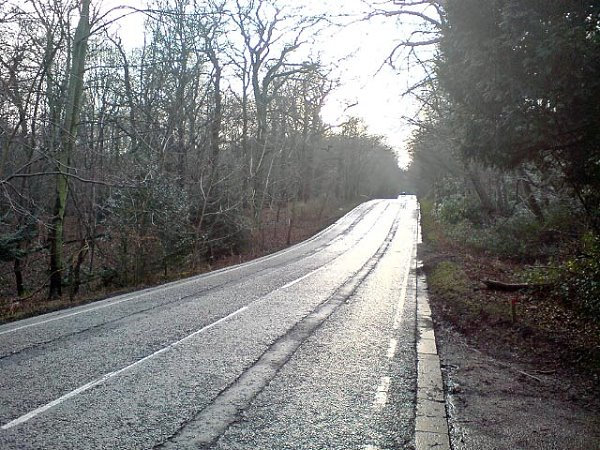
THE
AVENGERS: The Curious
Case of the Countless Clues (Don Sharp: January
1968)
Earle and Gardiner follow Flanders, Bentley. Flanders turns right at a
junction (Well Road and Judges Hill) while the
villains drive straight
on. Flanders' engine begins to fail as he passes a post box.
(Spotted by Geoff Dodd: January 2002)
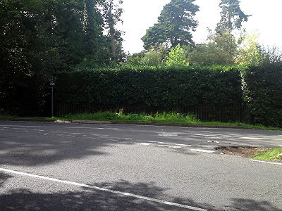
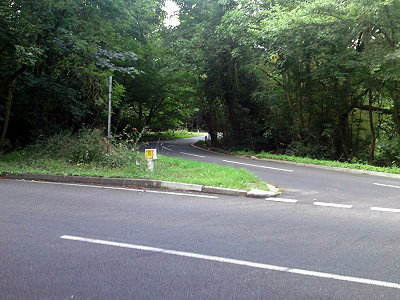
DEPARTMENT
S: The Man Who Got a
New Face (Cyril Frankel 1968)
On the night of August 16th Gerhard makes his way at night to the
Kolliatis' villa. Later Annabelle Hurst and Jason King follow behind
Sullivan's car as he makes his way to a meeting with Nicole (Judge’s
Hill). The Department S team race to get to the Italian
border before
the blackmailers (Judges Hill/Well Road junction).
Once the Department
S team get to the Italian border they decide to double back along the
coast road (Judges Hill/Well Road junction).
Identified by Geoff Dodd: July 2009
G16: East Barnet Road, New Barnet
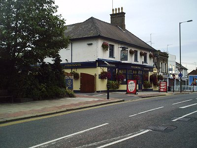
RETURN
OF THE SAINT: The
Nightmare Man (Peter Sasdy: July 1977)
Simon Templar (Ian OgiIvy) arrives in his jaguar at
a pub (The Railway
Bell) to see Dolby. Jan Gunther (Joss Ackland)
arrives in a taxi at a
junk shop to see Dillon (Roy Evans) about buying a
gun. Later Simon
Templar (Ian OgiIvy) arrives in Jaguar.
Identified by Wyn Roberts July 2002
G17: The Lantern Restaurant, 1284 High Road, Whetstone
RETURN
OF THE SAINT: The
Poppy Chain (Charles Crighton: 1977)
General Platt (Laurence Naismith) confronts Robbie (Kim
Fortune) at The
Lantern Coffee Shop. He chases the young boy round the back of the shop
and gives him a hiding.
Identified by Wyn Roberts, August 2002
G18: Newmans Hill, Hadley Wood
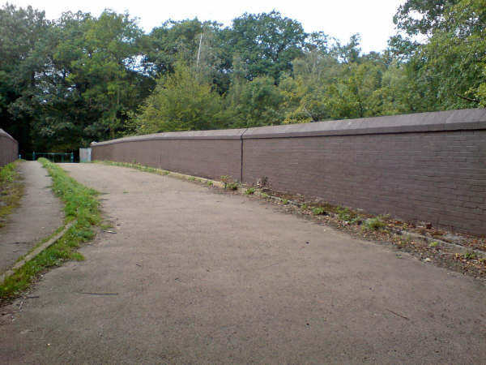
THE
CHAMPIONS: The Fanatics
(John Gilling 1967)
Sharron Macready and Craig Sterling follow Richard Barratt and his
escort over a railway bridge.
(Suggested by Keith Howard, September 2006, confirmed by Geoff
Dodd)
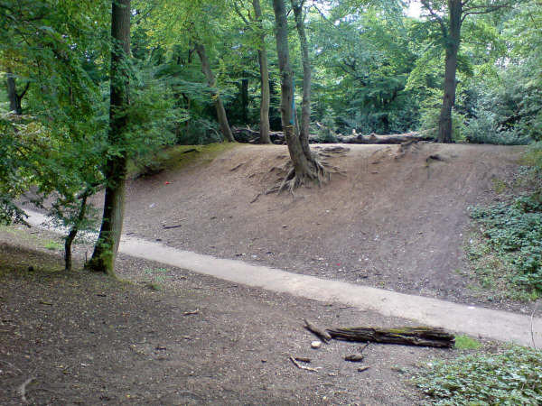
THE
SAINT: Where the Money
Is (Roger Moore: Summer 1968)
Simon Templar (Roger Moore) is driving his rented
convertible on his
way to meet the kidnappers. He finds the road blocked by another car
and a sniper waiting for him and the million dollars he is carrying.
(Identified by Geoff Dodd, August 2007)
DEPARTMENT
S: A Cellar Full of
Silence (John Gilling: June 1968)
Vic Kent and Stewart Sullivan narrowly miss crashing into each other on
a country road as Stewart races to find out what has happened to Jason
King.
G19: Whetstone
GIDEON’S WAY: The
Reluctant Witness (Jeremy
Summers: April 1965)
Red Carter (Mike Pratt) and his gang use a garage (Whetstone
Garage,
Whetstone High Road) as their base. Tiny Bray (Frederick
Peisley), a
police informer, goes to the garage to listen in to Red's latest plans
but is seen and hides in a car on the forecourt before running away.
Spotted by Jaz Wiseman, July 2005
RETURN
OF THE SAINT: The
Poppy Chain (Charles Crighton: ???)
General Platt (Laurence Naismith) confronts Robbie (Kim
Fortune) at The
Lantern Coffee Shop (The Lantern Restaurant, 1284 High Road).
He chases
the young boy round the back of the shop and gives him a hiding.
Identified by Wyn Roberts, August 2002
G20: High Street Barnet
GIDEON’S
WAY: The Reluctant
Witness (Jeremy Summers, April 1965)
Rachel Gully (Audrey Nicholson) walks to
the florists and
chats to a Policeman, PC Moss (Trevor Banister) on
the way (St. Alban’s
Road/High Street).
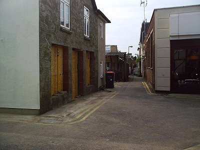
RETURN
OF THE SAINT: The
Obona Affair (Peter Sasdy:??)
Simon Templar (Ian Ogilvy) and Colonel Dyson (Jack
Hedley) go to see
Sid in his antique shop at 206 High Street.
Identified by Wyn Roberts, August 2004
G21: Alston Road Barnet
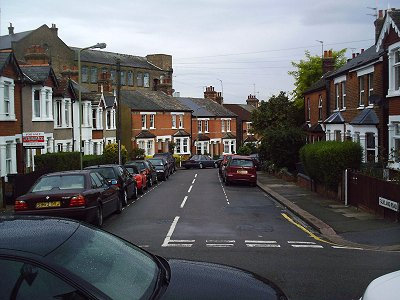
RETURN OF THE SAINT:
The Obono Affair (Peter
Sasdy:??)
Simon goes to see the Bentley Brothers at 30 Layton Street and follows
them in his Jaguar as they make their way to see Michael Wright (they
travel along St. Albans Road. The Avenue, Alston Road, Falkland Road,
Strafford Road and Carnarvon Road).
Identified by Wyn Roberts, August 2004
G22: Victoria Road. New Barnet

Photo: Wyn Roberts
RETURN OF THE SAINT:
The Obono Affair (Peter
Sasdy:??)
Pub where Simon Templar (Ian Ogilvy) goes to a pub (The
Bailey) to look
for information about rebels and meets Colonel Dyson (Jack
Hedley) in
the car park.
Identified by Wyn Roberts, September 2004
G23: Railway Tunnel, Ganwick Corner, nr. Bentley Heath, Potter's Bar
THE
BARON: Farewell to
Yesterday (Leslie Norman: September 1965)
Mannering threatens to smash Nick's henchman against the wall of an
oncoming tunnel unless he reveals the location of Nick's cabin.
(Identified by Andrew Chilcott, 25th August, 2013)
G24: Junction of Woodside
Lane and Wildhill Road
51�44'43.26"N, 0�11'33.82"W
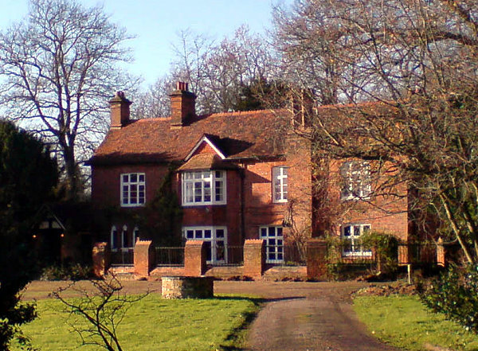
THE
AVENGERS: The Danger
Makers (Charles Crichton: November 1965)
Dressed as a Hell’s Angel, General Groves, lurks at a crossroads on his
motorbike playing chicken with the passing traffic. Unfortunately his
antics lead to him being killed by a truck.
Identified by Geoff Dodd, November 2004
Television:
THRILLER: In
Possession
G25: Union Street, Barnet, at the junction with Stapylton Road
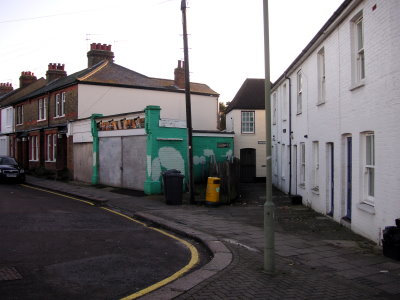
GIDEON’S
WAY: The Reluctant Witness (Jeremy
Summers,
April 1965)
Rachel Gully (Audrey Nicholson) walks to work from
home. Later Syd
Carter (David Gregory) corners Tiny Bray (Frederick
Peisley) at a call
box. Rachel Gully sees everything.
Identified by Mark Littlefield, November 2007
G26: Kingswood, Clay Hill, Enfield

DANGER
MAN: The Professionals
(Michael Truman)
John Drake (Patrick McGoohan) arrives at the Prague
home of Milos
Kaldor (Alex Scott) for a swimming party (swimming
pool has been filled
in). Here he is introduced to the beautiful Ira (Nadja
Regin). The
following day he returns to ask a favour of his new friend.
Film:
THE LIGHT IN THE
PIAZZA (1962).
G27: Silver Street Goffs Oak (redeveloped)
THE
PROTECTORS: Blockbuster
(Jeremy Summers: 1973)
Villains Birch (Stanley Meadows) and Slater (Maurice
O’Connell) drop
off the crushed security van at country workshop. They are watched by
the police Inspector (Peter Jeffries). After the
villains leave Glen
Bailey (Christopher Neam) arrives in his Lotus. The
police move in and
Bailey attempts to flee. After brief chase he is captured by Harry Rule
(Robert Vaughn).
(Suggested by Sam Denham, confirmed by ‘Stevie Gee’, at the
Britmovie
Forum)
Television:
TIMESLIP (1970)
– see www.timeslip.org.uk

photo: Geoff Dodd
THE
AVENGERS: The Curious
Case of the Countless Clues (Don Sharp: January
1968)
The Citroen with Earle and Gardiner on board leaves Flanders' house
carry a number of expensive paintings with them (towards the
Well Road
junction). Later Steed driving the breakdown truck back to
London
weaves across the road (in the opposite direction).
(Spotted by Geoff Dodd: March 2010)
G29: Hadley Wood South Tunnels
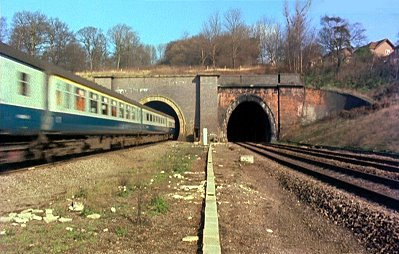
THE
PROTECTORS: Shadbolt
(John Hough: 1973)
On the train, Shadbolt reveals to Harry Rule that he is a contract
killer just as the train enters a tunnel (left hand tunnel).
Seconds
later the train emerges (right hand tunnel).
(Spotted by Alan Filed, June 2008)
G30: Trent Park, Cockfosters Road, Enfield
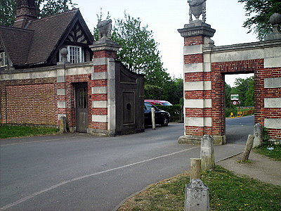
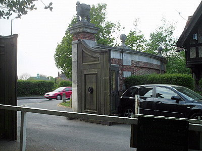
THE
SAINT: The Angel's Eye
(Leslie Norman: March 1966)
Malone and Corbett watch as Jeremy Cranmore arrives at the gates of
Cranmore House in his E-Type Jaguar. The gates are opened by the park
ranger and he drives through.
(Identified by David Solan, April 2011)
G31: Theobalds Park, Lieutenant Ellis Way, Cheshunt
THRILLER:
Kiss Me and Die (1973)
(Identified by Geoff Dodd, June 2011)
G32: Waltham Cross


photos: Geoff Dodd
THE
AVENGERS: The £50,000
Breakfast (Robert Day: 26th June 1967)
The wreck of Dusty Rhodes' car has been stolen by Pegram's assistant
who has tekn it to a scrap yard (W.C. Jones and Co.,
Britannia Road,
redeveloped) where it is being rushed.
(Spotted by Mike Richardson, June 2012)
THE
SAINT: The People
Importers (Ray Austin: 1968)
Suresh Gupta (Salmaan Peer) is pursued to a
junkyard (Britannia
Road)where he is able to telephone for his sister. Bonner (Neil
Hallett) and Slater (Gary Miller) in the
Bentley see Suresh and chase
him further into the junkyard. Simon Templar (Roger Moore)
and Mailia
(Nik Hassal) arrive in Simon's Volvo. Mailia
telephones the police
while Simon deals with the villains.
(Identified by Geoff Dodd, February 2007)
THE PROTECTORS: Blockbuster (Jeremy
Summers: 1973)
Harry Rule (Robert
Vaughn) walks around Baliey's Car Breakers in Thames
Street (W.C. Jones and
Co., Britannia Road, redeveloped) and asks a workman (Ron
Pember) if a
van had recently been put through the crusher.
(Identified by Alan Field, April 2023)
G33: Ganwick Farm on Wagon Road, Barnet

photo: Geoff Dodd
Russian agents in a “Joe’s Television Service” van watch as
Stewart
Sullivan drives past on his way to find Jason King who has just jumped
with a parachute.
(Identified by Geoff Dodd, November 2023)